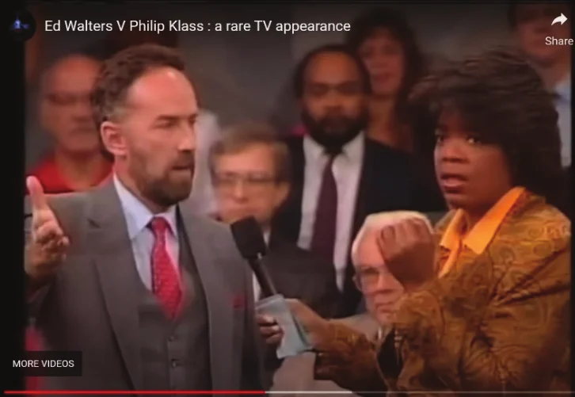
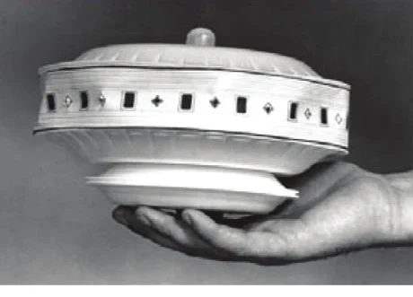
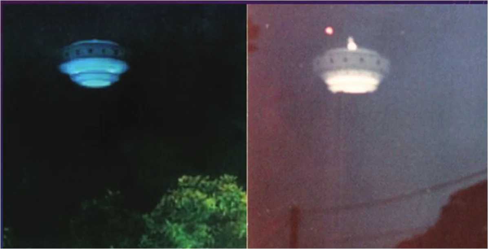
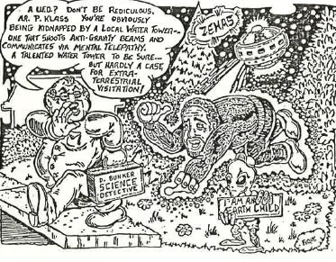
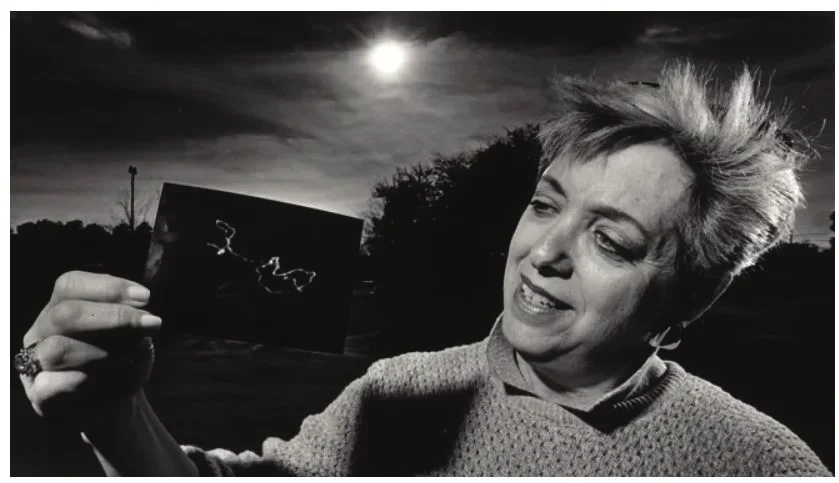
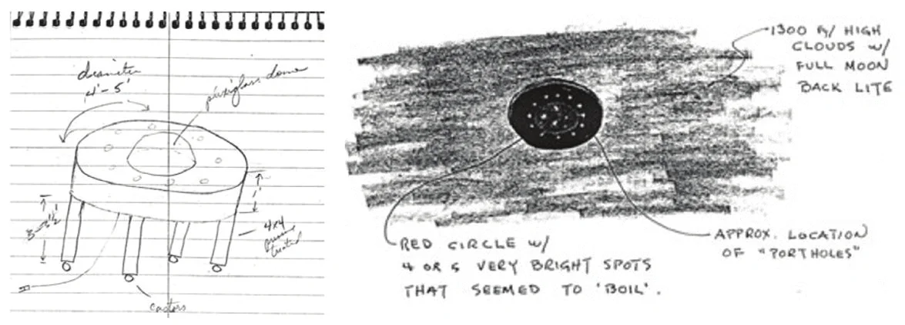

Tant d'aplomb sur commande,
Le grand jeu de scène, l'illusion grandiose ;
En vérité, tout y
était, sauf le vrai. D'après un poème publié par le Bristol Mercury en
. Imbler, Sabrina: The English Servant Girl Who Pretended
to Be an Exotic Island Princess, Atlas Obscura, .
Original anglais : Such self-possession at command, / The byplay great, th’ illusion grand; / In
truth—’twas everything but true.
Pour bien comprendre le phénomène de Gulf Breeze de la fin des années et du début des années , il faut le considérer non pas d'abord comme une affaire d'ovni, mais comme une joute politique. Comme lorsqu'un ouragan frappe la côte du golfe du Mexique, de nombreux facteurs se sont conjugués pour créer une tempête parfaite de compétition sociale, y compris des forces culturelles extérieures. Comme en météorologie, la pression a été un facteur clé : la promotion très médiatisée des observations et des photos d'Ed Walters par lui-même et par le MUFON a incité des gens à saisir cette occasion d'ascension par la « créativité sociale ». Walters et ceux qui l'ont soutenu ont tiré parti de l'« ignorance rationnelle » et de l'« économie du mensonge » pour persuader d'autres personnes de rejoindre l'endogroupe des Croyants et des Témoins, tout en punissant l'exogroupe des sceptiques et des démystificateurs. Il en est résulté un environnement fait de fortes « attentes », de « désinformation » et de puissants « indices visuels » qui, selon Elizabeth Loftus et al, peuvent altérer les témoignages oculaires.

Permettez-moi de commencer par un aveu : « La fiabilité des témoignages d'ovnis » est un sujet qui dépasse mon expérience et mes compétences. Avant que vous ne passiez à un autre chapitre, laissez-moi m'expliquer. Je suis un ancien reporter de presse en voie de guérison, dont la seconde carrière m'a conduit dans l'étrange monde nouveau de l'université, où j'ai découvert des théories et des recherches en rapport avec ce sujet. Ainsi, bien que je n'aie toujours pas la formation nécessaire pour évaluer les témoignages oculaires en général, et encore moins ceux qui touchent au paranormal, je suis un expert de la « fiabilité du témoignage d'un témoin d'ovni en particulier » et de l'impact qu'il a eu sur l'environnement social de toute une communauté du Panhandle de Floride à la fin des années et dans les années . Je crois que resserrer notre attention sur l'étude du cas d'Ed Walters apporte de nombreux éclairages précieux sur le sujet plus large qui nous occupe.
Ceux qui affirment avoir eu un contact avec des ovnis portent en eux une contradiction : ils peuvent être tout à
fait certains d'avoir vu quelque chose qu'ils ne peuvent pas identifier. Voyez cette histoire d'un « démystificateur »
devenu témoin d'ovni... Il y a près de 30 ans, un ami et collègue du Pensacola News Journal de Floride m'a appelé en s'écriant, affolé : Il faut que tu voies ça ! Je
n'ai jamais rien vu de pareil ! Je passe te prendre.
C'était la proverbiale nuit sombre et orageuse, un déluge
s'abattant une fois de plus sur cette partie humide du monde. Quelques minutes plus tard, j'étais dans sa voiture,
zigzaguant à travers cette grande et vieille ville portuaire à la poursuite d'étranges taches de lumière changeant
de forme, qui allaient et venaient, tournaient et tournaient dans le ciel nocturne, apparemment dans ou derrière les
nuages. Tourne à droite ici ! Tourne à gauche ici !
criais-je, faisant office de navigateur. Les lumières
informes se déplaçaient vite, plus vite que n'importe quel aéronef, disparaissant brièvement avant de ressurgir pour
poursuivre leur danse éblouissante. Au bout de ce qui nous sembla des heures, nous avons remarqué une régularité
dans les lumières tournoyantes et de faibles traînées sous elles. En estimant le centre de la figure lumineuse,
nous l'avons extrapolé vers le bas jusqu'à une autoroute au nord de la ville. Là, nous avons découvert la source du
spectacle : un concessionnaire automobile qui utilisait de gigantesques projecteurs rotatifs pour attirer l'attention
sur une promotion. Les faisceaux se reflétaient sous les nuages comme ceux d'une lampe torche parcourant un drap
suspendu, changeant de forme en se déplaçant. Mais pendant ces quelques heures, moi, le reporter qui a aidé à
percer l'affaire d'ovni de Gulf Breeze,
je n'arrivais pas à saisir ce que je voyais. Je raconte cela non pour rabaisser ceux qui déclarent avoir observé
des ovnis, mais pour illustrer mon propos : je peux relater de façon fiable ce que j'ai fait cette nuit-là, mais si
nous n'avions pas découvert ce que nous voyions, notre témoignage oculaire aurait abouti à de la pure
spéculation.
Les travaux d'Elizabeth Loftus et de ses collègues sur les « faux souvenirs » et l'« inflation par l'imagination » soulèvent de sérieuses questions sur l'exactitude des témoins oculaires en général. Dans une étude célèbre, Loftus et al ont montré à des participants des publicités modifiées de Disney World (Remember the Magic) décrivant une merveilleuse journée dans le parc d'attractions du point de vue d'un enfant. Un pourcentage statistiquement significatif des participants se sont souvenus d'avoir rencontré des personnages qui ne pouvaient pas s'y trouver à l'époque :
Par exemple, 16 % des personnes ont affirmé avoir serré la main de Bugs (Bunny) après avoir vu la fausse publicité avec Bugs ; 7 % ont dit se souvenir d'avoir rencontré Ariel, un personnage qui n'avait pas encore été créé, après avoir vu une publicité suggérant que tous les enfants la rencontrent au parc. Aucun de ces deux personnages n'aurait pu se trouver au parc pendant l'enfance des participants... il y a eu inflation par l'imagination, les gens devenant plus certains que l'événement suggéré par la publicité leur était arrivé lorsqu'ils étaient enfants. Braun, K.A., Ellis, R. & Loftus, E.F.: Make My Memory: How advertising can change our memories of the past, Psychology and Marketing, , p. 17
Il va de soi que conserver un souvenir sur une longue période peut être difficile. Étonnamment, pourtant, Loftus
affirme que la défaillance se produit souvent non pas lors de la rétention, mais lors de la première étape
du processus de témoignage, l'acquisition : (M)ême si un événement est suffisamment lumineux,
suffisamment bruyant et suffisamment proche, et même si l'on y prête attention, on peut encore trouver des erreurs
importantes dans le souvenir qu'un témoin a de l'événement.
Loftus, Elizabeth F.:
Eyewitness Testimony, Cambridge, Massachusetts, Harvard University Press, , pp. 22-23 Loftus et al documentent d'autres influences
puissantes, dont le stress et la peur. Mais il y en a trois autres que je juge pertinentes pour la saga de Gulf
Breeze : les « attentes » créées par un groupe de pairs ou un enquêteur ; l'« effet de désinformation », par lequel
le souvenir d'une personne peut être sensiblement modifié après une exposition à des informations trompeuses sur
l'événement ; et surtout les « indices visuels » tels que les photos et autres images. Je ne me risquerais pas à
appliquer ces principes à une observation particulière, mais je crois que les trois ont convergé dans l'espace et
dans le temps à Gulf Breeze pour créer un environnement qui a altéré les témoignages oculaires.
Pour vraiment comprendre les observations de Gulf Breeze, il faut les considérer non pas d'abord comme une affaire d'ovni, mais comme une campagne politique. L'affirmation de Walters selon laquelle il aurait pris 38 photos lors de 20 rencontres du a déclenché ce qui est sans doute l'affrontement ufologique le plus âprement disputé et le plus médiatisé de l'histoire des États-Unis. La grille suivante peut aider à comprendre la nature politique de cette affaire :
Avant même ses « observations », Ed manifestait un désir d'ascension sociale en tant que notable local. Il aida à organiser une chasse au trésor dans le cadre du 25e anniversaire de la ville. Il s'essaya au service public comme membre de la commission d'urbanisme de Gulf Breeze et briguerait plus tard un siège au conseil municipal. Mais en , lorsqu'il soumit au journal local des photos floues de vaisseaux spatiaux stéréotypés, sortis d'un film de science-fiction de série B des années , lui-même fut peut-être surpris par le raz-de-marée qu'il déclencha. Comment un constructeur de maisons local a-t-il pu provoquer une telle explosion de soutien et d'attention à cette époque précédant tout juste l'ère numérique ? Une partie de la réponse est que Walters était un déclarant intelligent, charismatique, convaincant, infatigable, agressif et habile avec les médias. Je souscris au résumé qu'en a fait l'ancien maire de Gulf Breeze Ed Gray dans un épisode d'Unsolved Mysteries de :
Ed Walters est extrêmement intelligent, plus intelligent que moi, j'en suis sûr. Il a réussi à créer une histoire, à l'alimenter et à la faire durer depuis des années maintenant... Les photographies d'Ed Walters sont un canular créé dans le but de lancer l'ovni comme sujet d'intérêt, et qui est finalement devenu pour lui un moyen de gagner beaucoup d'argent avec une publication. “Update: Gulf Breeze UFO Incident”, Unsolved Mysteries (with Robert Stack), NBC, season 3 episode 69,
Mais, n'en déplaise aux Beach Boys, Walters a aussi su « prendre la vague » (Catch a Wave) de l'intérêt culturel pour les ovnis et de la défiance envers le gouvernement des années et . Cela se reflétait dans des livres comme Communion et Transformation de Whitley Strieber, et Intruders de Budd Hopkins (Hopkins écrirait l'introduction du livre de Walters). Plus tard, l'émission phare d'un nouveau réseau de télévision soutiendrait que « la vérité est ailleurs » (The Truth is Out There) et qu'elle est dissimulée par le gouvernement. The X-Files débuta en et l'affaire de Gulf Breeze serait évoquée dans deux épisodes : l'épisode Fallen Angel de et l'épisode E.B.E. de . Dans ce dernier, les agents du FBI Fox Mulder et Dana Scully ont l'échange suivant à propos de photos d'ovnis fournies anonymement, qui illustre cet air du temps culturel :
MULDER : « C'est la meilleure preuve photographique que j'aie jamais vue. Quand j'ai vu les photos de Gulf Breeze pour la première fois, j'ai su que c'était un canular, mais ça... c'est la qualité des preuves que le gouvernement a amassées depuis des décennies aux plus hauts niveaux de classification... »
SCULLY : « Mulder, cette photo est un faux. »“E.B.E.”, The X-Files (with David Duchovny and Gillian Anderson), FOX,
Le contexte politique est également essentiel. Le mouvement né du terreau sablonneux du nord-ouest de la Floride
était un étrange mélange de conservateurs et de libéraux, ce qui lui permit d'attirer des membres des deux camps
dans une région où la Marine et l'Armée
de l'air sont très présentes. On y trouvait une croyance New
Age nébuleuse (selon Streiber et Hopkins) voulant que ces contacts fassent partie de l'évolution de l'humanité
vers un plan d'existence supérieur. Cela plaisait aux libéraux qui n'étaient pas traditionnellement religieux. On y
trouvait aussi une défiance et une suspicion envers le gouvernement fédéral, incarnées par l'ascension politique du
parti républicain, ce qui plaisait aux conservateurs, dont beaucoup étaient traditionnellement religieux. Comme
Walters l'a dit à Unsolved Mysteries : c'est une ville très conservatrice, et je suis un type
très conservateur. ... Je ne voulais pas être connu comme le constructeur qui a vu des ovnis.
“Update: Gulf Breeze UFO Incident”, Unsolved Mysteries (with Robert Stack), NBC, season 3
episode 69, Cela, de la part d'un homme qui jouait son propre
rôle dans une émission de télévision nationale, démontrant que, loin d'être le contacté réticent, Walters était sans doute le témoin d'ovni le plus agressif et
le plus engagé qui ait jamais existé. À partir de , il fut un guerrier heureux
qui adorait l'attention des médias, le débat avec les Debunkers, la bataille pour les « voix » sous
forme de croyance aux observations d'ovnis, les siennes en particulier. Des variantes de ces citations de The Gulf Breeze Sightings devinrent son « discours de campagne » à la télévision nationale, dans les
interviews aux informations locales ou lors d'événements publics appelés Skywatches :
Je ne peux plus regarder le ciel nocturne et écarter la possibilité d'une vie intelligente quelque part dans les cieux... Mon caractère a été attaqué, et cela je ne peux pas totalement le pardonner ni l'oublier... Les plus de 100 autres témoins ont été constants dans l'affirmation de ce qu'ils ont vu. Nous avons vécu une rencontre aux proportions spectaculaires... Le discrédit personnel que je porte en révélant la véritable histoire de ces événements émouvants devient de moins en moins important comparé à la réalité de l'ovni : une preuve formelle. Walters, Ed & Walters, Frances: The Gulf Breeze Sightings: The Most Astounding Multiple UFO Sightings in U.S. History, William Morrow & Co., , p. 265
Si l'ascension fulgurante d'Ed Walters est impressionnante, sa survie en tant que contacté soutenu l'est peut-être plus encore. Une recherche rapide dans les médias ufologiques le montrera. La couverture de , 30e anniversaire de ses clichés Polaroid entendus dans le monde entier, trouvait un soutien persistant à Ed, quoique quelque peu nixonien ou clintonien, celui qu'on accorde à un dirigeant abîmé qui inspire toujours la loyauté. Pour rester dans notre thème, la fiabilité de ce témoin singulier aurait dû depuis longtemps être universellement rejetée, Walters avouant dans la disgrâce, présentant ses excuses pour tout le temps, l'encre, le papier et les cassettes vidéo gaspillés dans ce débat, et proposant de rembourser quiconque avait acheté son livre. Passons en revue les preuves bien documentées qu'il s'agissait d'un canular, avec quelques commentaires au fil de l'eau sur les efforts faits pour les écarter. Avant de devenir photographe d'ovnis en , Walters avait un penchant bien connu (reconnu mais minimisé par ses partisans) pour les farces faites avec le même vieil appareil Polaroid ou un appareil semblable, en utilisant le plus souvent la double exposition pour faire apparaître l'image d'un « fantôme » ou d'un « démon » derrière les personnes photographiées. En , alors que Walters gagnait la célébrité et une petite fortune grâce à des photographies de vaisseaux spatiaux dans le ciel de Gulf Breeze, j'ai découvert qu'une maquette de vaisseau spatial en polystyrène (voir figure 2) avait été trouvée dans le grenier de l'ancienne maison de Walters, où il habitait à l'époque de ces prétendues rencontres.

Personne ne m'avait prévenu qu'une maquette avait été trouvée, ni encouragé à aller à l'ancienne maison d'Ed
pour parler à ses nouveaux occupants. Ce fut du journalisme d'investigation à l'ancienne, en remontant la
piste. C'est un point essentiel, car il réfute les affirmations de Walters et de ses partisans selon lesquelles
j'aurais fait partie d'une cabale gouvernement-Debunkers visant à trouver (voire à placer) la
maquette sous fausse bannière pour démystifier l'affaire de Gulf Breeze. Pour qu'un tel coup monté fonctionne, il
n'aurait rien pu être laissé au hasard. Robert Menzer, le propriétaire qui a trouvé la
maquette dans son grenier, n'avait aucun intérêt à l'annoncer : Quand j'ai découvert la maquette, je n'y ai pas
beaucoup pensé. C'était juste une curiosité qu'elle soit là. Je n'étais pas conscient à ce moment-là de
l'importance attachée à une maquette d'ovni.
“Update: Gulf Breeze UFO Incident”,
Unsolved Mysteries (with Robert Stack), NBC, season 3 episode 69,
La maquette avait une partie centrale en papier découpé dans des plans de maison, sur lequel étaient écrites, de l'écriture caractéristique de Walters, les dimensions d'une maison. Walters admit que les plans et l'écriture étaient les siens, mais prétendit qu'ils avaient été récupérés dans ses poubelles et utilisés pour fabriquer la maquette « faussement fausse ». Le débat sur la question de savoir si un plan de maison avec ces dimensions existait au moment de la découverte de la maquette est une fausse piste : Ed avait bel et bien produit des plans de maison avec ces dimensions avant que la maquette ne soit trouvée, d'après les archives municipales que j'ai personnellement consultées. En les consultant, j'ai découvert que quelqu'un avait arraché le coin de l'épais papier à dessin où les dimensions étaient inscrites. Un employé municipal m'a dit que Walters était passé peu de temps avant mon arrivée pour consulter ces plans. Il a été confirmé que les dimensions étaient les mêmes que celles de l'intérieur de la maquette. Myers, Craig R.: War of the Words: The True but Strange Story of the Gulf Breeze UFO, Bloomington, Xlibris Corp., , pp. 133-134 J'ai rapporté la maquette dans les locaux de notre journal et travaillé avec des photographes pour recréer des photos en double exposition du type de celles qu'Ed était devenu célèbre pour avoir prises avec son Polaroid (voir figure 3).

L'argument de Walters et de ses partisans selon lequel la maquette ne ressemblait pas exactement aux ovnis de ses photos revient à ce qu'un faussaire prétende, après la découverte chez lui d'un faux billet de 20 dollars, que cela ne compte pas parce que les cheveux d'Andrew Jackson y sont différents de ceux des autres billets de 20 dollars qu'il a mis en circulation dans la communauté.
Plus tard en , j'ai personnellement interviewé un témoin oculaire
convaincant et écrit son histoire : un jeune homme posé et consciencieux nommé Tommy
Smith. Il a expliqué en détail, officiellement et au prix de sa réputation, comment il avait aidé Ed à
truquer des photos d'ovnis par le procédé de la double exposition. Selon Smith, en , Walters lui donna six photos truquées à porter au journal Gulf
Breeze Sentinel pour lancer l'aventure. Smith a déclaré à Unsolved Mysteries qu'il s'était
ravisé et avait refusé : Les deux raisons principales pour lesquelles je ne suis pas allé jusqu'au bout, c'est
qu'en gros je mentais à mes parents, et aussi que j'avais simplement l'impression que c'était une fraude.
Smith
a aussi répondu à l'argument selon lequel la maquette n'était pas une réplique exacte du sujet des photos de
Walters : Il avait un endroit par terre où il pouvait s'agenouiller ou s'asseoir et photographier la maquette à
chaque fois. J'étais assis dans la chambre et il est allé dans le placard, en a sorti une maquette et a dit « non,
pas la bonne », l'a remise en place et en a sorti une autre.
“Update: Gulf Breeze UFO
Incident”, Unsolved Mysteries (with Robert Stack), NBC, season 3 episode 69, Au début de , ce qu'Ed avait
commencé comme une farce s'était transformé en moyen de gagner de l'argent (200 000 dollars rien que pour
l'écriture de son livre). Ensuite, cela ferait boule de neige pour devenir un mouvement quasi politique et une
méthode inédite d'ascension sociale.
En , les psychologues britanniques Henri Tajfel et John Turner introduisirent la théorie de l'identité sociale (SIT) pour expliquer comment les groupes sociaux progressent :
La théorie suggère que le groupe auquel nous nous identifions (famille, club de football, nation...) est important pour notre estime de soi et notre sentiment d'identité. Par un processus de catégorisation sociale, nous décidons à quel groupe social les gens appartiennent : « nous » ou « eux » (l'endogroupe ou l'exogroupe). Vient ensuite l'identification sociale, par laquelle nous adoptons l'identité d'un groupe et ajustons notre comportement en conséquence, puis la comparaison sociale, par laquelle nous comparons nos groupes aux autres. Valoriser les traits de l'endogroupe (« nous sommes formidables ») et dénigrer les exogroupes (« ils sont mauvais ») garantit que la comparaison sociale tourne à l'avantage de notre propre groupe. Selon la théorie de l'identité sociale, l'endogroupe cherchera les aspects et caractérisations négatifs de l'exogroupe pour rehausser sa propre image. “Social Identity Theory: ‘Us’ and ‘Them.’”, UKRI, Economic and Social Research Council,
Selon la SIT, un groupe peut poursuivre l'une de trois stratégies pour progresser :
Que ce soit par intention ou par instinct, Walters choisit cette troisième approche, recherchant l'ascension et le
prestige dans une autre dimension en promouvant de nouvelles normes ou un nouveau modèle de développement (sans
jeu de mots[Note de RR0] En anglais, developmental model évoque aussi le
développement photographique et la maquette (model).). À mesure que les témoignages
oculaires se multipliaient de façon exponentielle, ils inversèrent la dynamique sociale stéréotypée des affaires
d'observations d'ovnis : les Croyants et les Témoins devinrent l'endogroupe promu et protégé, tandis que les
contradicteurs et les Debunkers étaient punis en tant qu'exogroupe. Cela reflétait aussi un élément
de compétition sociale dans lequel les membres du groupe peuvent rechercher une distinction positive par une
compétition directe avec l'exogroupe. Ils peuvent essayer d'inverser les positions relatives de l'endogroupe et de
l'exogroupe sur des dimensions saillantes.
Tajfel, H. & Turner, J.C.: The Social Identity
Theory of Intergroup Behavior, in J.T. Jost & J. Sidanius (eds.): Political psychology, London,
Psychology Press, , p. 20
Un exemple de créativité sociale eut lieu en , lorsqu'une Britannique
ordinaire se fit passer pendant plusieurs mois, dans le Gloucestershire, en Angleterre, pour la mystérieuse « princesse
Caraboo ». Elle s'habillait en membre d'une famille royale asiatique, dansait de façon exotique, tirait à l'arc et
inventa même une langue parlée et écrite. Bientôt, un marin portugais, Manuel Eynesso, prétendit la comprendre et
traduisit son histoire : elle avait nagé jusqu'au rivage après avoir échappé à des pirates qui l'avaient enlevée
dans un pays appelé Javasu, où elle priait un dieu nommé « Allah-Tallah ». Elle tenait sa cour en ville comme une
véritable reine, recevant un flot continu de journalistes, de peintres, de physiognomonistes, de craniologues et de
linguistes, dont un certain Dr Wilkinson, qui identifia sa langue à l'aide de la Pantographia
d'Edmund Fry.
“The Mysterious Princess
Caraboo”, Cheltenham, The History Press, La supercherie
ne dura que quelques mois :
Désormais, la nouvelle de la séduisante étrangère s'était répandue et des membres curieux de la bonne société vinrent rendre visite à la femme désormais connue sous le nom de Caraboo. L'étrangère était traitée comme un chef d'État en visite... Il apparut que la prétendue princesse était en réalité Mary Willcocks, originaire de Witheridge, dans le Devon. Elle n'était pas princesse, mais fille de cordonnier. Apparemment, elle avait adopté ce déguisement dans l'espoir de se rendre plus intéressante.
Pour qu'une stratégie de créativité sociale réussisse, les critères de statut proposés doivent être reconnus comme valables et dignes d'intérêt par le groupe dominant. Dans le cas de Walters, le nouveau critère était de devenir l'un des Croyants qui, bien qu'opprimés par le gouvernement et les Debunkers, étaient sur le chemin de la Transformation. Un nombre stupéfiant de personnes déclarant un contact surgirent, allant de gens ordinaires à des notables tels qu'un ingénieur chimiste, un médecin légiste et un conseiller municipal, beaucoup affirmant avoir été témoins non pas simplement d'un ovni, mais de l'ovni.
Les talents d'Ed Walters en tant que candidat mufonien s'exprimèrent pleinement en
, lors de son passage dans The Oprah Winfrey Show après la
découverte de la maquette d'ovni et la publication des révélations de Smith. The Oprah Winfrey Show,
Ed était au meilleur de sa forme, jouant à la fois la victime et l'attaquant tout en prononçant son discours de
campagne et en débattant avec un Debunker. Il construisit méthodiquement autour de lui un champ de
force de soutien en cercles concentriques, en partant du niveau local pour l'étendre à tout le pays et même au
monde entier. Invité par Oprah Winfrey à raconter son histoire, il commença par l'enjeu
de la campagne : Il y a deux ans et demi, j'ai vu ce que j'ai vu, et je sais que ce que j'ai vu était un ovni. Les
gens se sont manifestés en masse, des dizaines et des dizaines de personnes disant oui, c'est exactement ce que nous
avons vu. ... Je soutiens entièrement l'idée que le gouvernement étouffe l'affaire.
Il appela le Congrès à tenir
des auditions pour forcer l'armée à nous dire ce qu'ils font : « Que se passe-t-il ? C'est notre droit
d'Américains de savoir ce que nous finançons notre gouvernement à faire.
Le sceptique Phil Klass était sur le plateau, tentant vaillamment de débattre de la maquette et
du témoignage accablant de Smith, mais Walters maîtrisait la situation. Lorsque Klass résuma rapidement les
affirmations extravagantes d'Ed sur des rayons bleus, des images de femmes nues et un enlèvement, Walters reprit la célèbre formule
du président George H.W. Bush pour susciter les
applaudissements et les acclamations du public : Lisez sur mes lèvres, je n'ai jamais prétendu avoir été
enlevé.
Quand une femme du public l'interrogea sur la maquette, Walters en fit l'occasion de durcir sa
rhétorique de campagne :
Si vous trouvez que cette maquette ressemble un tant soit peu aux photos de ce que les gens voient autour de Gulf Breeze, alors il vous faut des lunettes... la farce qui a consisté à mettre une maquette dans une maison où j'ai habité... était une tentative de quelqu'un pour discréditer les observations. Et cela me montre qu'il y a bel et bien une dissimulation en cours pour essayer de faire disparaître ce phénomène. Et toute grande affaire qui se produit aux États-Unis sera tournée en ridicule, et j'ai entendu ces mêmes histoires, des histoires non étayées de maquettes et de témoins qui se manifestent, encore et encore, et il n'y a rien de vrai là-dedans.
Lorsque Klass fit remarquer que le maire qualifiait l'histoire de canular et que Walters avait deux condamnations pénales, dont une pour faux, Ed s'attira davantage d'applaudissements avec son discours de clôture passionné :
Ce genre de moquerie est exactement ce que fait le gouvernement avec pratiquement toutes les affaires d'ovni très médiatisées. Ils vont fouiller le passé de quelqu'un... et essayer de convaincre les gens dans tous les États-Unis : « ne vous inquiétez pas, ne vous inquiétez pas, il n'y a rien. Ce type est un criminel, il n'a rien vu en réalité », « oh, ils vont mettre une maquette dans une vieille maison où il a vécu ». « Oh, ne vous inquiétez pas, ce n'est qu'une maquette. » Des centaines de personnes à Gulf Breeze témoignent avoir vu cette chose. Maintenant, si vous voulez croire que je suis un faussaire ou un mystificateur, alors il vous faut aussi, d'une manière ou d'une autre, convaincre toutes ces autres personnes qui voient la même chose qu'elles sont elles aussi des farceurs et des mystificateurs. The Oprah Winfrey Show,
Comme toutes les campagnes, celle-ci avait pour but d'obtenir des « voix », que je définis ici comme la croyance en l'histoire d'Ed en tant que partie d'un phénomène plus large de contact avec les ovnis. Dans son offensive multimédia, il ne se contentait pas de partager son expérience : il construisait sa base. La dernière phrase du livre de Walters invite d'autres témoins oculaires à lui envoyer leurs histoires et leurs photos.
Ces témoignages oculaires de soutien illustrent à quel point le succès d'Ed Walters comme candidat mufonien dépendait en grande partie du principe d'« ignorance rationnelle ».
Le bénéfice attendu d'un mensonge politique vient de sa réussite à obtenir des voix... l'homme politique rationnel en quête de voix mentira jusqu'au point où les bénéfices marginaux attendus égalent le coût marginal attendu. De façon prévisible, les hommes politiques mentiront davantage aux électeurs rationnellement ignorants qu'aux électeurs bien informés. Rowley, Charles K.: The Intellectual Legacy of Gordon Tullock, New York, Springer, , p. 39
L'expression « ignorance rationnelle » n'est pas péjorative ; elle signifie simplement que les électeurs (ici, les
partisans) restent délibérément ignorants de certaines questions parce que le coût de l'acquisition d'informations
à leur sujet est supérieur aux bénéfices à en tirer. Une analogie est celle de quelqu'un dont la machine à laver
tombe en panne : il pourrait étudier et apprendre à la réparer lui-même. Mais la personne moyenne choisira de payer
un spécialiste pour la réparer, parce que le coût de l'acquisition de l'information est comparativement trop élevé.
Il est donc plus rationnel de rester ignorant. Dans l'affaire Walters, de nombreux témoins auraient pu investir le temps et l'effort intellectuel nécessaires
pour comprendre ce qui se passait réellement, mais ont préféré se déclarer simplement croyants. La théorie de
l'ignorance rationnelle explique une bonne partie de ce qui pourrait autrement sembler être un comportement humain
déroutant. ... Plus l'électeur est occupé, plus il est rationnel pour lui de rester politiquement ignorant.
“The
Theory of Rational Ignorance”, Economic Brief No. 29, Clemson University Community and Economic
Development Program
Il y avait des hommes politiques qui disaient voir des objets. Il y a eu
tellement d'observations dont il faut rendre compte, à moins de croire à une collusion massive de la part des
habitants de Gulf Breeze et de Pensacola
, a déclaré en Bruce Maccabee, partenaire de Walters. Moon, Troy: 30
Years After Gulf Breeze UFO sightings, Is the Truth Still Out There?, Pensacola News Journal, Mais une conspiration aussi massive et organisée n'est pas du tout
nécessaire. Dans le film The Lady Vanishes, le protagoniste tente d'élucider la mystérieuse
disparition d'une amie dans un train, pour voir de nombreux passagers nier que cette femme ait même jamais existé.
Prié d'expliquer pourquoi tant de gens mentiraient, le héros répond : Je ne peux pas, à moins qu'une personne ne
mente et que les autres ne la couvrent.
“The Lady Vanishes”, directed by Diarmuid Lawrence
(with Tuppance Middleton and Tom Hughes), BBC,
À Gulf Breeze, quelques personnes mentaient purement et simplement tandis que d'autres les couvraient pour diverses raisons. Parmi ces soutiens figuraient Duane Cook, rédacteur en chef du journal local qui lança le phénomène en publiant les photos de Walters, et Brenda Pollack, membre du conseil municipal de Gulf Breeze. Le principal soutien vint cependant du Mutual UFO Network, alias MUFON, qui revendique aujourd'hui plus de 4 000 membres dans le monde. Le MUFON resterait aux côtés d'Ed contre vents et marées, non seulement en fournissant juste assez de jargon photographique pseudo-scientifique pour lui donner un vernis de crédibilité (comme l'avaient fait les universitaires en visite pour la princesse Caraboo), mais aussi en menant l'attaque contre les critiques. En , après une enquête seulement superficielle, Ed devint officiellement le candidat mufonien lorsque le directeur international Walter H. Andrus Jr. publia ce soutien :
C'est l'une des affaires d'ovni les plus étonnantes sur lesquelles j'aie enquêté au cours des 30 dernières années aux États-Unis... Le témoin/photographe a été jugé être un homme d'affaires sincère, honnête et prospère, qui pourrait détruire sa réputation personnelle au sein de la communauté s'il était l'auteur d'un canular. Aucune preuve n'a été révélée que ce citoyen de Gulf Breeze ait été impliqué dans quoi que ce soit de trompeur. Au contraire, il a impressionné chacun des enquêteurs par la sincérité avec laquelle il partage très ouvertement son expérience. Myers, Craig R.: War of the Words: The True but Strange Story of the Gulf Breeze UFO, Bloomington, Xlibris Corp., , p. 43
Ce groupe d'enquêteurs du paranormal devint partenaire à part entière dans l'écriture du livre de Walters, The Gulf Breeze Sightings. Andrus développa son soutien en expliquant que l'intelligence derrière
les ovnis avait implanté un minuscule dispositif de communication dans la tête d'Ed, par lequel ils pouvaient
communiquer par la voix ou par un bourdonnement pour l'avertir de la proximité de leur engin. ... Ed a pu être
programmé pour prendre les photographies destinées au public dans le cadre du plan ultime des entités, qui est de
se faire connaître progressivement du public et des gouvernements du monde.
Walters, Ed &
Walters, Frances: The Gulf Breeze Sightings: The Most Astounding Multiple UFO Sightings in U.S. History,
William Morrow & Co., , p. 346. Le directeur du MUFON pour la Floride,
Don Ware, déclara que ces observations sont la preuve d'une visite extraterrestre
, en
s'appuyant sur sa propre version du rasoir d'Occam :
On pourrait se demander pourquoi un couple de Gulf Breeze s'est vu accorder dix-huit séances photographiques. La raison la plus évidente, à mes yeux, est que les extraterrestres veulent que les gens voient les photographies. J'espère que cela amènera davantage de gens à réfléchir sérieusement à l'idée que nous, en tant qu'espèce intelligente, ne sommes pas seuls dans l'univers. Walters, Ed & Walters, Frances: The Gulf Breeze Sightings: The Most Astounding Multiple UFO Sightings in U.S. History, William Morrow & Co., , p. 347
Maccabee écrivit un chapitre entier dans lequel il envisageait la possibilité que les photos soient des doubles
expositions, puis l'écartait en partie parce qu'Ed niait toute connaissance d'une telle technique, en partie pour
des raisons photographiques, et en grande partie parce que personne n'avait jamais vu Ed avec des maquettes
d'ovnis. Personne non plus n'avait vu de telles maquettes ou de traces de telles maquettes chez Ed.
Walters, Ed & Walters, Frances: The Gulf Breeze Sightings: The Most Astounding Multiple UFO
Sightings in U.S. History, William Morrow & Co., , p. 288 Pourtant,
en , après qu'une telle maquette eut été trouvée, Maccabee déclara : Il y a
très peu de preuves qu'Ed ait truqué ces photos.
“Update: Gulf Breeze UFO Incident”,
Unsolved Mysteries (with Robert Stack), NBC, season 3 episode 69, Il y avait alors beaucoup d'« éléments » indiquant qu'Ed les avait
truquées, comme exposé plus haut ; peut-être le mot que cherchait Maccabee était-il « preuve formelle ». Il y a cinq
ans, Maccabee a qualifié la maquette, et non les photos de Walters, de canular au carré
. Moon, Troy: 30
Years After Gulf Breeze UFO sightings, Is the Truth Still Out There?, Pensacola News Journal, La relation entre Walters et le MUFON profiterait
mutuellement aux deux parties pour gagner des partisans, des membres et des clients.
Ed n'admettra jamais, au grand jamais, que c'est une fraude, même si ça va au tribunal, même s'il va en prison ;
quoi qu'il arrive, il n'admettra jamais que c'est une fraude. ... Ed m'a toujours dit qu'il irait jusqu'à la tombe,
qu'il n'admettrait jamais que c'était truqué
, a déclaré Smith. “Update: Gulf Breeze UFO
Incident”, Unsolved Mysteries (with Robert Stack), NBC, season 3 episode 69, Je comprends son point de vue, mais aucun crime n'a été commis, et
poursuivre Ed pour fraude aurait été vain à cause du Premier Amendement et parce que quiconque achète un tel livre
sait qu'il y a de fortes chances qu'il ne soit pas vrai. Walters ne pouvait pas plus être poursuivi avec succès pour
son mensonge que je ne pourrais l'être pour avoir dit qu'il a menti. Peut-être était-ce considéré comme un mensonge
inoffensif, car après tout, toutes les bonnes farces ne sont-elles pas des mensonges ? Plus tard, cela deviendrait
un moyen de gagner de l'argent, puis finalement le moteur d'un mouvement sociopolitique. L'économiste et théoricien
politique Gordon Tullock a écrit dans The Economics of Lying sur la
stratégie d'un propagandiste politique, un homme ou une organisation qui vise à changer l'opinion publique afin
d'atteindre un objectif politique.
Pour y parvenir, l'organisation doit généraliser son argumentation pour
séduire ce cercle plus large de partisans :
Les traités de rhétorique recommandent normalement d'insister fortement sur les points forts de son argumentation tout en survolant les points faibles. Le groupe de pression peut avoir intérêt à faire exactement l'inverse si l'argument faible séduit un grand nombre de personnes qui ne s'intéressent que vaguement au sujet.Toutes les citations de Tullock de cette page proviennent de The Economics of Lying. Tullock, Gordon: The Economics of Lying, in The Economics of Politics, Ingram, , pp. 259-269
Dans les joutes politiques, le mensonge peut faire partie de ce processus et, s'il comporte certains risques, il
offre un gain quantifiable. Tullock dit que mentir comporte deux enjeux, la probabilité que le mensonge soit cru
et la probabilité qu'il persuade l'auditeur d'accomplir l'action souhaitée.
Le mensonge fera toujours partie d'un effort pour persuader une ou plusieurs personnes d'accomplir une action ou de s'abstenir d'une action. C'est un effort de persuasion, et son bénéfice viendra du succès de la persuasion.
Si quelqu'un est prédisposé au mensonge, le choix de mentir devient au sens propre une décision calculée. Tullock
a élaboré des équations pour illustrer ce principe, la plus simple étant B1-C1=P1. Dans cette équation, B1 =
bénéfices anticipés du mensonge ; C1 = coûts anticipés du mensonge ; et P1 = gain. Tullock énumère plusieurs coûts
du mensonge, dont la mauvaise conscience, la sanction formelle et l'atteinte à la réputation. La souffrance de
la conscience sera ressentie du seul fait de mentir ; les deux autres coûts ne seront ressentis que si le mensonge
échoue, c'est-à-dire s'il n'est pas cru.
Mais en dehors de certaines situations professionnelles ou juridiques, les sanctions du mensonge sont
socialement déterminées
et n'ont donc pas de conséquences tangibles. Mentir sur une observation d'ovni est
une chose pour laquelle la société n'a pas prévu de sanction formelle. Tullock dit :
Les électeurs étant largement inattentifs, ils n'apprennent normalement de la campagne que ce que les candidats leur imposent par des techniques de relations publiques. La plupart des informations de l'électeur provenant de la production des candidats, et la plupart des électeurs et des sources d'opinion étant déjà engagés avant le début de la campagne, la répétition d'une fausse accusation peut être très efficace. La décision de mentir ou non dépendra largement d'une estimation de l'efficacité des organisations de relations publiques des deux candidats.
Ainsi, poussé par le mensonge et ses soutiens, le débat de Gulf Breeze devint très tôt une telle compétition de relations publiques entre les groupes pour et contre Ed, et le MUFON eut l'avantage au début.
En réponse aux efforts coordonnés d'Ed Walters et du MUFON, une coalition lâche de
critiques et de sceptiques se forma pour contester leurs
affirmations. On les appela collectivement les Debunkers, et le groupe se composait d'hommes
comme l'accordeur de pianos californien débonnaire Zan Overall, le trouble-fête
sarcastique Phil Klass et le méthodique savant fou Dr Willy Smith.
Myers, Craig R.: War of the Words: The True but
Strange Story of the Gulf Breeze UFO, Bloomington, Xlibris Corp.,
Ce groupe mena des escarmouches par fax et par téléphone, débattant de stries d'émulsion, de mouvements de nuages,
de hublots asymétriques et d'autres sujets de ce genre. Avant les réseaux sociaux, leur tribune consistait à servir
de sources pour des articles de presse et un bulletin intitulé Saucer Smear, publié par son
« rédacteur en chef et toujours commandant suprême », Jim Moseley
(voir figure 4).

Certains groupes ufologiques faisaient partie de cette coalition
d'opposition, au premier rang desquels le Center for UFO Studies (CUFOS), qui déclara très tôt
que les photos étaient très probablement un canular
.
Quant à moi, je n'avais pas entrepris de démystifier cette histoire. Le ton de ma couverture initiale était celui d'un phénomène local intéressant, parfait pour des articles de société amusants. Mais c'est la documentation par Overall, dans un rapport de 44 pages, des jeux photographiques de fantômes et de démons de Walters lors de soirées qui m'a aidé à voir qu'il y avait peut-être un effort délibéré en cours de la part de Walters et de ses soutiens pour tirer profit de l'affaire, tant en argent qu'en attention. Cela a changé l'angle journalistique de ma couverture. D'un point de vue journalistique, à mesure que la campagne du candidat mufonien lui apportait davantage d'attention nationale et internationale et un bénéfice économique continu, Walters devint une « personnalité publique à titre limité » (limited purpose public figure) et donc une cible légitime pour un journalisme de service public plus critique. L'essentiel est que Walters a choisi les feux des projecteurs ; ils ne lui ont pas été imposés (et par là je ne parle pas du fameux « rayon bleu » dont il a prétendu qu'il l'avait soulevé du sol). Walters avait aussi une forte opposition politique locale, notamment le maire Ed Gray et le chef de la police Jerry Brown, qui refusaient que leur communauté tranquille et familiale soit utilisée par Walters et ces gens de l'extérieur pour promouvoir leur cause. Gray et Brown jouèrent un rôle déterminant pour retrouver Smith et le convaincre de raconter son histoire. Malgré tout cela, la campagne de Walters continua de prendre de l'ampleur à mesure que le soutien aux observations d'Ed, et aux ovnis en général, croissait de façon exponentielle et remplissait les pages des journaux et les ondes d'histoires du type « moi aussi j'ai vu quelque chose ».
L'une des principales façons dont le débat sur l'ovni de Gulf Breeze fut une joute politique tient au scandale de la maquette en polystyrène, à la manière du Watergate, et aux efforts des Croyants pour le gérer. Une décennie plus tard, l'analogie deviendrait plus claire encore avec le scandale Clinton-Lewinsky. Clinton tint bon à peu près comme Walters : atteint dans sa réputation, discrédité dans certains milieux, mais toujours viable comme dirigeant en raison de l'investissement de son parti, des médias et de ses partisans dans sa réussite. Le MUFON et Ed chercheraient à discréditer Smith comme la « cellule de crise » de Clinton le fit avec les femmes qui l'accusaient de rencontres rapprochées d'un autre genre. Le scénario hypocrite ainsi créé ressemblait beaucoup à celui où ceux qui affirment qu'« il faut croire les femmes » en matière de harcèlement sexuel changent de discours quand l'accusé est l'un des leurs. Ici, les personnes déclarant un contact avec des ovnis, qui criaient à l'injustice parce qu'on doute d'elles et qu'on les écarte, s'en prirent à un jeune homme qui était lui-même un témoin oculaire, celui de maquettes d'ovnis utilisées par Walters pour réaliser des photos en double exposition.Les tentatives pour joindre Tommy Smith afin qu'il commente cet article n'ont pas abouti. Un membre de sa famille contacté par courriel a indiqué que Smith ne souhaitait pas revivre cet épisode.
Walters ouvrit le feu dans Unsolved Mysteries avec l'étrange comparaison suivante :
Les déclarations de Tommy ne tiennent pas. Peu importe la gentillesse et la sincérité avec lesquelles il les dit, elles ne tiennent pas. On m'étudie depuis deux ans et demi, chaque mot que j'ai prononcé a été examiné et contre-examiné. Pourquoi soudain devrions-nous croire sans aucun examen chaque mot que dit ce jeune homme, simplement parce qu'il se trouve être un contradicteur ? “Update: Gulf Breeze UFO Incident”, Unsolved Mysteries (with Robert Stack), NBC, season 3 episode 69,
Le MUFON se joignit à Walters pour s'en prendre à la crédibilité de Smith, Andrus le traitant tout simplement de menteur. Ils se demandèrent pourquoi Smith avait attendu si longtemps pour se manifester, le qualifièrent de fanatique religieux voulant discréditer toutes les observations d'ovnis, ou encore, ma préférée, de nouveau de Walters :
En , Tommy Smith, le jeune homme, a réellement photographié un ovni. Il était très bouleversé quand il l'a dit à son père, ou c'est son père qui a été très bouleversé quand son fils le lui a dit, et il a dit que les anges arrivaient, une conversation très, très religieuse qui a effrayé le jeune homme, lequel a ensuite dit à son père que ce n'était qu'un trucage. Myers, Craig R.: War of the Words: The True but Strange Story of the Gulf Breeze UFO, Bloomington, Xlibris Corp., , p. 131
Un autre membre du MUFON ironisa sur le fait que Smith déclare avoir assisté à certaines séances de trucage
d'ovnis, mais aucune des photos de ces séances n'a jamais été publiée.
C'est ainsi que l'affaire de Gulf Breeze « sauta le requin » (jump the shark) avec le spectacle de
croyants aux ovnis et de personnes déclarant un contact, persécutés et maltraités, faisant précisément subir cela à
Smith à cause de son témoignage oculaire dérangeant.
La campagne, le débat et la gestion de crise se poursuivirent jusqu'au congrès du MUFON tenu à Pensacola en (ce lieu
ayant été choisi longtemps à l'avance). Lors d'une conférence de presse, Andrus déclara : nous soutenons Ed Walters à 100 %.
Le point culminant de
l'événement avait tout d'un discours d'acceptation lors de la convention d'investiture d'un parti politique, Ed et
Frances Walters assis au centre de la scène, le public silencieux, les lumières tamisées,
des photos d'ovnis projetées sur un écran derrière eux, répétant qu'ils disaient la vérité et accusant : tout est
déformé par les debunkers.
Mais il y avait aussi des machinations machiavéliques à l'œuvre en coulisses : Ed savait qu'en le rejetant, le MUFON rejetterait sa propre crédibilité et son propre jugement... Renouvelez-moi votre soutien, ou je vous entraîne dans ma chute, semblait murmurer Ed. Pour se sauver, le MUFON devait accepter Ed. Myers, Craig R.: War of the Words: The True but Strange Story of the Gulf Breeze UFO, Bloomington, Xlibris Corp., , pp. 148-149
Plus tard cette année-là, il y eut un nouveau rebondissement lorsque deux membres locaux du MUFON chargés de
rouvrir l'affaire Walters, Rex Salisberry et Carol
Salisberry, conclurent courageusement qu'il s'agissait peut-être d'un canular après tout. Ils furent
désavoués par Andrus et remplacés par un nouvel enquêteur, qui parvint à la conclusion prédéterminée qu'il fallait
toujours croire Ed.
L'affaire connut son apogée avec un coup de théâtre lorsque Walters devint véritablement candidat politique
en , en se présentant à l'élection du conseil municipal de Gulf Breeze. Lors
d'un débat, il affirma : Je suis assis devant vous non pas en tant que témoin d'ovni, mais en tant que candidat
qualifié. Les ovnis n'ont rien à voir avec les affaires de la ville.
Myers, Craig R.: War of the Words: The True but
Strange Story of the Gulf Breeze UFO, Bloomington, Xlibris Corp., , p.
157 La ville n'avait pas de circonscriptions, si bien que les quatre candidats arrivés en tête sur neuf
obtiendraient un mandat au conseil municipal. Le soir de l'élection, Ed termina bon dernier, neuvième sur neuf
candidats, ne recueillant que 373 voix sur près de 8 400 exprimées. L'ignorance rationnelle qui avait aidé Walters à
réussir dans la campagne pour gagner les cœurs et les esprits de Gulf Breeze ne se traduisit pas en voix réelles
dans les urnes. Car, comme l'écrit Tullock : Si les individus vont aux urnes, ils votent selon leur intérêt, tel
que cet intérêt est perçu au mieux à travers le brouillard de l'ignorance rationnelle, de la bêtise, de la
persuasion et des mensonges.
Le candidat mufonien ne représentait pas les intérêts de Gulf Breeze.
Robert Stack, animateur de l'épisode d'Unsolved Mysteries de , demandait : Même en laissant de côté la controverse Ed Walters, un mystère
fascinant demeure : que penser des centaines de témoignages oculaires d'habitants de Gulf Breeze qui affirment avoir
vu les mêmes ovnis que ceux photographiés par Ed Walters ?
“Update: Gulf Breeze UFO
Incident”, Unsolved Mysteries (with Robert Stack), NBC, season 3 episode 69, Sans chercher à savoir si « des centaines » ont littéralement déclaré
avoir vu l'ovni du type de celui de Walters, il y en a eu beaucoup, ce qui rend la question légitime. D'abord, pour
en revenir à Elizabeth Loftus, un indice visuel qui influence les témoignages oculaires
n'a pas besoin d'être physiquement présent lors de l'événement : il peut être projeté rétroactivement dans le
souvenir lorsqu'on voit cet indice. En outre, pour ceux qui cherchent des objets difficiles à identifier dans le
ciel, Gulf Breeze est l'endroit idéal. La
ville se trouve au centre de l'un des espaces aériens les plus fréquentés de la planète : à l'ouest se trouvent la
NAS de Pensacola et un aéroport régional, et à l'est la base aérienne d'Eglin
et Hurlburt Field, une immense zone d'essais pour fusées, missiles,
drones et avions expérimentaux. Les avions qui volent de nuit
n'ont pas l'apparence à laquelle on pourrait s'attendre.
Mais pour vraiment répondre à cette question, il y a d'autres témoignages oculaires à prendre en compte. Pollak, la conseillère municipale pro-Walters, a déclaré à Unsolved Mysteries : Ce que j'ai vu n'était certainement pas une petite maquette faite d'assiettes
en carton ou une autre petite maquette. C'était un objet majeur.
“Update: Gulf Breeze UFO
Incident”, Unsolved Mysteries (with Robert Stack), NBC, season 3 episode 69, Elle a pris une photo de cet objet la première fois en . (Voir figure 5.)

Loin d'être un ovni du type de celui de Walters, elle montre la trajectoire d'un objet lumineux se déplaçant de
façon désordonnée dans les brises du golfe, en boucles, comme un ballon captif ou un cerf-volant. Puis en , juste à temps pour le deuxième épisode d'Unsolved Mysteries sur
l'affaire de Gulf Breeze, Pollak allait photographier à nouveau cet objet lors d'une observation avec Ed Walters. Soumis à une surveillance accrue à cause de la maquette et du témoignage de
Smith, Ed avait appelé d'urgence chez lui plusieurs membres du MUFON et soutiens locaux, dont Pollak, pour observer un ovni dans le ciel.
Pollak a dit n'avoir pu prendre la photo qu'après l'extinction de la lumière, et qu'à l'arrière-plan elle pouvait
voir la silhouette ronde d'un objet ou d'un engin quelconque qui n'était pas éclairé.
“Update:
Gulf Breeze UFO Incident”, Unsolved Mysteries (with Robert Stack), NBC, season 3 episode 69, Tous les participants jouaient leur propre rôle dans l'épisode, y
compris Walters, qui déclara : C'était merveilleux d'être avec une foule de gens et de rester là à regarder cet
objet, parce qu'on n'est plus seul.
Quel était cet objet majeur ? En , une
source anonyme que je juge très crédible m'a raconté comment, un jour, elle s'était rendue chez Walters. Personne ne
venant à la porte, elle trouva Ed dans le garage, travaillant sur un objet plus grand en forme d'ovni comme s'il
s'agissait de sa tondeuse autoportée. Ce témoin oculaire fit un dessin de cet objet qu'il avait vu de près et en
plein jour dans le garage d'Ed (voir figure 6).

Le , jour où le Pensacola News Journal publia mon article de révélations sur
l'ovni de Gulf Breeze, il publia aussi une chronique de mon rédacteur en chef Ken
Fortenberry qui apportait un bon équilibre. Il y racontait son enfance de fils d'un pilote impliqué dans l'une
des affaires d'ovni les plus célèbres de l'histoire, les observations Nash-Fortenberry. Ken
commençait en écrivant Je crois aux ovnis
et concluait par : Il y a beaucoup de gens bien, en particulier
dans la région de Gulf Breeze, qui voient quelque chose. Nous n'essayons pas de dire qu'ils ne voient rien. Nos
articles se concentrent simplement sur un homme, Ed Walters, et ses rencontres avec des ovnis à Gulf Breeze.
Fortenberry, Ken: Believe In UFOs? Sane People Are Seeing Something, Pensacola News
Journal, Je conviens que c'était vrai de notre travail
professionnel de journalistes. Pour cet article, j'ajouterai que la fiabilité discréditée de ce seul témoin
a un impact plus large sur la fiabilité des témoins d'ovnis. La campagne agressive et acharnée de relations
publiques et de gestion de crise menée par Ed Walters et le MUFON devint une tempête
parfaite. Dans le contexte culturel d'un intérêt croissant pour les ovnis, elle créa un environnement qui poussait
les gens à choisir entre l'endogroupe des Croyants aux ovnis et l'exogroupe des
Debunkers. De plus, elle réunissait les trois influences documentées par Loftus : attentes,
désinformation et indices visuels. C'est ainsi qu'un ouragan social et politique frappa Gulf Breeze, en Floride, de . En son centre se trouvait un mensonge soigneusement calculé et fortement
soutenu, projetant de puissantes bandes d'influence qui laissèrent sur leur passage la fiabilité des témoins
oculaires d'ovnis dévastée.